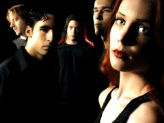
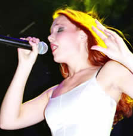

Fundada em abril de 2002 pelo ex-integrante do
After Forever,
Mark Jansen, a banda holandesa Epica é uma tradução
fiel das inovações musicais que tomaram a cena do
metal nos últimos anos. A soma das guitarras com corais
no estilo de música sacra, uma vocalista soprano, violinos,
cellos e pianos, compõem sua fórmula sofisticada.
Apesar de recém formada, o Epica está entre as principais
referências do estilo.
Inicialmente a banda chamava-se Sahara Dust
e contava com a participação provisória da
vocalista norueguesa Helena Michaelsen (ex Trail of Tears). Porém,
em outubro de 2002, Simone Simons com apenas 17 anos de idade,
recebeu o convite de Mark Jansen para ser a vocalista definitiva.
Em novembro, a banda entrou no Excess Studio na cidade de Rotterdam
(onde o After Forever gravou Prison of Desire), para
gravar a demo Cry For The Moon, que seria lançada
no mês seguinte. Este trabalho traz apenas a faixa título
e Illusive Consensus. A primeira apresentação
ao vivo ocorreu no dia 15 de dezembro, em Tilburg, Holanda.
Em
janeiro de 2003 no Gate Studio da Alemanha, iniciaram as gravações
do álbum de estréia The Phantom Agony.
Em março, após algumas reuniões entre os
integrantes surgiu a idéia de trocar o nome da banda. Segundo
Simone Simons: "Epica é um lugar do universo onde
nós podemos encontrar as respostas para as mais importantes
perguntas sobre a vida. A maioria de nossas letras é parecida
com o significado de Epica. E o Kamelot acabava de gravar seu
álbum intitulado Epica. Nós adoramos o título.
A maioria dos membros, incluindo eu, adora ouvir Kamelot. Então
decidimos mudar o nome para Epica".
Lançado em junho de 2003, The Phantom Agony
conta com nove faixas e uma produção musical riquíssima
de Sascha Paeth (produtor do Rhapsody, Kamelot,
Angra, entre outros) com uma fortíssima influência
da música árabe, nítida na faixa Seif
al Din, e do metal melódico. Os vocais são
divididos entre a belíssima soprano Simone Simons e a voz
"demoníaca" de Mark Jansen. A participação
de oito vozes compondo o coral atribui um aspecto grandioso, especialmente
na faixa de abertura Adyta, cantada em latim. A sétima
faixa intitulada Run for a Fall escrita por Mark Jansen,
disserta sobre sua saída do After Forever. Façade
of Reality aborda os atentados de 11 de Setembro, incluindo
um trecho com declarações de Tony Blair; provando
que existe uma consciência humanista e social entre os integrantes,
sobretudo Mark Jansen, compositor de sete músicas neste
álbum.
Durante o ano de 2003, a banda fez várias
apresentações na Holanda, além de Bélgica
e França. Em setembro, os fãs são presenteados
com o clipe da música The Phantom Agony. Este
vídeo evoca uma atmosfera medieval, mística e grandiosa.
Em outubro foi lançado o single The Phantom Agony, que
traz a faixa título em duas novas versões, além
de Façade of Reality e a inédita Veniality.
Em janeiro do ano seguinte, chega às lojas o single Feint,
que traz esta música na versão original e "piano
version"; além da reedição de Seif
al Din e a nova Triumph of Defeat. No mês
seguinte é a canção Feint que ganha
uma versão em vídeo. Em maio é lançado
outro single: Cry for the Moon. Este trabalho conta com
quatro faixas, Cry for the Moon e Run for a Fall
em duas versões cada. Finalmente em setembro de 2004, é
lançado o DVD We Will Take You With Us, com os
clipes, Making Off e trechos inéditos da banda em apresentações
acústicas, ao vivo e em estúdio.
Os
shows continuaram em 2004. Na Europa as apresentações
passaram pela Inglaterra, Alemanha, Turquia, Espanha, Portugal
e outros países. Em dezembro, os mexicanos tiveram o prazer
de acompanhar de perto o Epica em nove shows. No final deste mesmo
ano, a banda voltou aos estúdios para a gravação
do segundo álbum: Consign to Oblivion. Este trabalho,
abordando a cultura Maia, foi lançado em abril de 2005
e traz onze faixas mixadas pelo alemão Sascha Paeth e pelo
brasileiro Philip Colodetti.
Em setembro do mesmo ano é lançado
o álbum The Score – An Epic Journey. Este
trabalho diferencia-se dos demais, porque algumas faixas foram
gravadas, originalmente, para compor a trilha sonora do filme
holandês Joyride. Mark e sua turma devem ter gostado
da idéia e dedicaram-se a compor um álbum inteiro.
No total, 20 faixas compõem este disco;
sendo que Trois Vierges (em duas versões), Quietus
e Solitary Ground foram resgatadas de Consign to Oblivion.
O resultado de The Score é uma composição
autenticamente "épica". Foram retiradas as guitarras,
os contra-baixos e a bateria; as cordas ganharam destaque juntamente
com os corais e a voz de Simone Simons.
Em outubro, o Epica lançou ainda o single
Quietus. Este trabalho traz duas versões: a primeira
com duas faixas e a segunda com quatro. Além da música-título,
Quietus, que também ganhou uma versão vídeo-clipe,
o single conta também com as inéditas Linger
e Crystal Mountain. Ainda, no final de 2005,
a banda realizou uma turnê pela América do Sul apresentando-se,
inclusive, em diversas capitais brasileiras.
Apesar da extensa agenda de shows e eventos que
marcaram 2006, pode-se afirmar que este foi um ano de mudanças.
Inicialmente, a banda fica sem gravadora após a falência
da Transmission Records e ainda entra em uma disputa jurídica
para obter os direitos de edição das próprias
músicas. Em maio, a banda lança o songbook The
Road to Paradiso contendo material gravado ao vivo e duas
faixas inéditas. Paralelamente, o baterista Jeroen Simons
deixa a banda enquanto Mark Jansen e Simone Simons terminam o
namoro. Em dezembro, a banda anuncia a inclusão de Ariën
van Weesenbeek (do God Dethroned) para ocupar a função
de baterista.
No fim de março de 2007, o Epica volta
a se apresentar em festivais e turnês, incluindo uma breve
visita à Argentina e vários shows na América
do Norte. Em abril, é assinado um contrato com a gravadora
Nuclear Blast, enquanto estão sendo finalizadas as gravações
do novo trabalho.
O álbum The Divine Conspiracy é
lançado em agosto de 2007 e segundo Mark "é
bem mais espontâneo porque Simone está mais experiente
agora". Este trabalho, que aborda a relação
entre Deus e as religiões, foi gravado no "Gate Studio"
com Sacha Paeth e traz 13 faixas, com destaque para Never
Enough (que foi lançada também como videoclipe)
e soa como o mais pesado de sua discografia. Para 2008, o Epica
fará uma apresentação em junho, na Hungria,
ao lado de uma orquestra sinfônica tocando composições
clássicas de Mozart, Dvorak, Vivaldi (entre outros) e músicas
próprias. Ainda em 2008, há a expectativa de um
retorno ao Brasil para a divulgação de The Divine
Conspiracy.
Por
Spectrum
Downloads
Disponíveis: